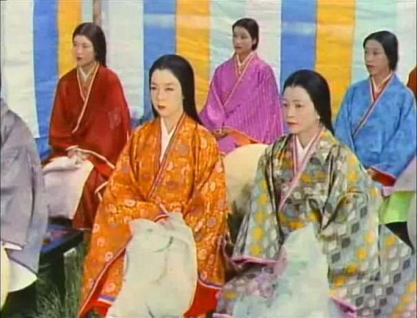
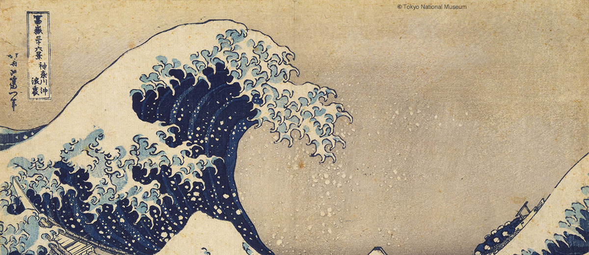
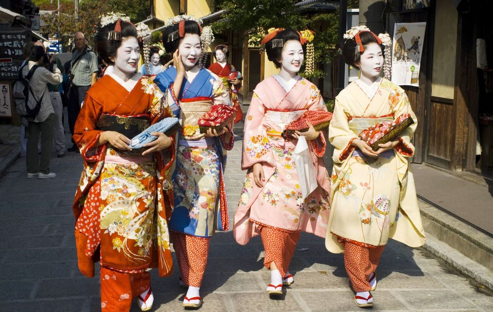
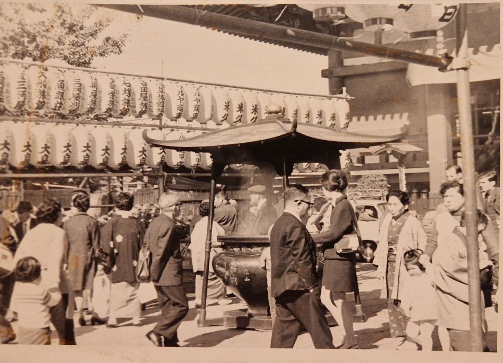
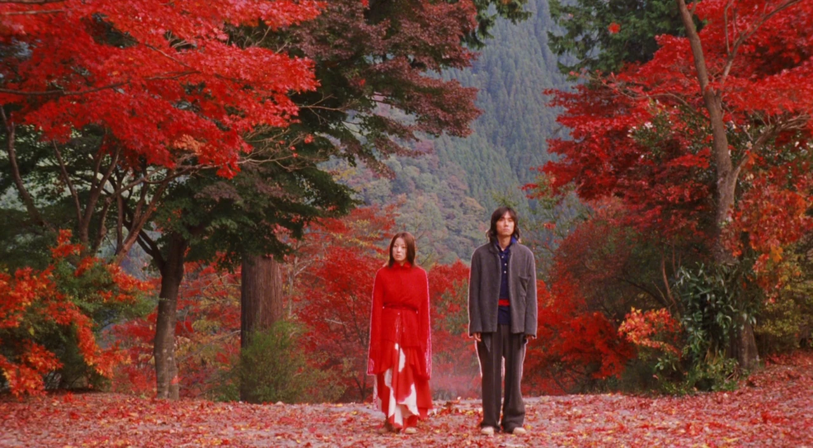
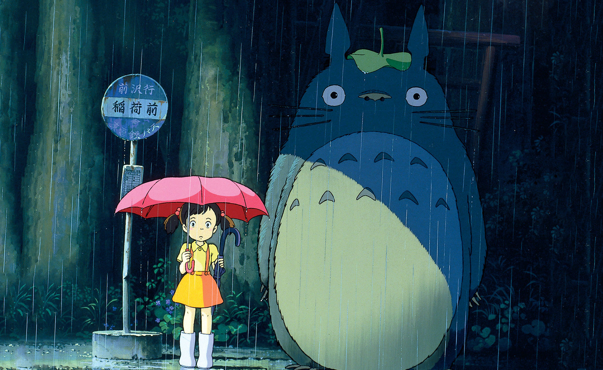
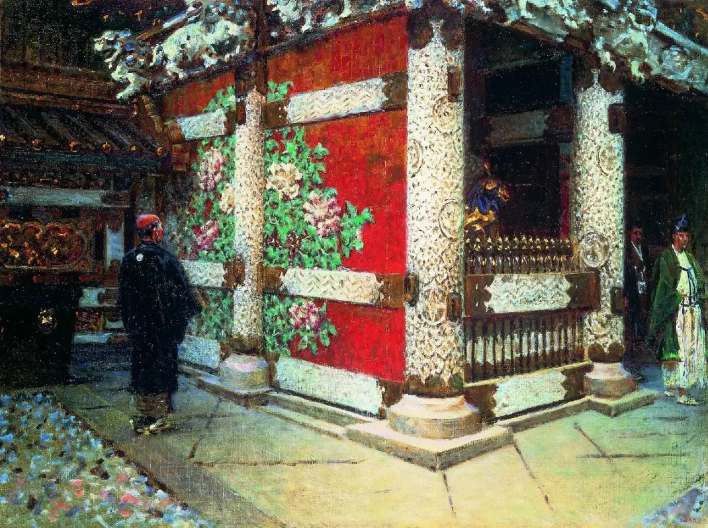
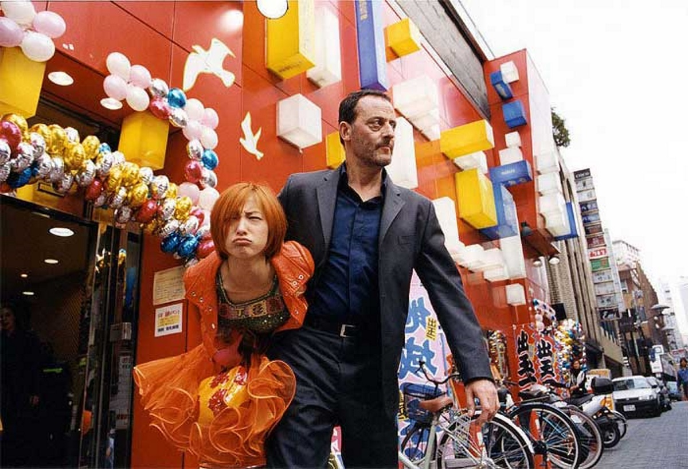

Japan colors
The collection of color combinations was based on the Sanzo Wada books "A Dictionary of Color Combinations" and "A Dictionary of Color Combinations vol.2", published by SEIGENSHA. The references are from anime by Studio Ghibli, western cinema about Asia, kimono, and photos from my trip to Japan in 2025.
About Sanzo Wada
Sanzo Wada (1883-1967) was born in Hyuogo, and began to study under Seiki Kuroda with the aim to become a painter in 1899. In 1901, he enrolled in the Tokyo Fine Arts School's Western painting program, from which graduated in 1904. After completing "Bokujo no banki" (1905), he became more widely known when his painting "Nampu" received the highest award in the Western painting category at the first Ministry of Education art exhibition (Bunten) in 1907. Since 1909 had started his European period. Before his return to Japan in 1915 he traveled across Asia and visited Java, Burma and India. He assumed office as a professor at the Tokyo Fine Arts School's Department of Design in 1937, when he also published Shikimei-cho, a collection of Japanese traditional colors and names. In 1954 he received an Academy Award for Costume Design for the movie "Jigokumon (Gate of Hell)", in 1955 this film was awarded the Palme d'Or grand prize at the Cannes Film Festival.
Principle of color combination and components
Sanzo Wada basically distinguishes between combinations of similar, and those of contrasting colors/tones, which he explains by further deciding each type into five patterns. Components were adopted from the old European concepts of similar and contrasting colors. The definition of colors is already based on their hue, brightness (shades) and saturation (chromatically), as well as combinations of tones of different brightness and saturation. Wada considers the possibility of using this principle subjectively, based on personal taste, combining differently sized areas of different colors.
Color combinations in the future art
The great work made by Sanzo Wada in the exploration of colors influenced modern design, cinema and arts. Only take a look at the following gallery and you easily guess the country.
.jpg)
Pacific ocean wave. Around 1970. Personal archive

The Great Wave off the Coast of Kanagawa. 1831. Katsushika Hokusai

Street photo

Japon. Around 1970. Personal archive

Dolls. 2002. Takeshi Kitano

My Neighbor Totoro. 1988. Hayao Miyazaki

Shintoistsky temple in Nikko. Around 1904. Vasily Vereshchagin

Wasabi. 2001. Luc Besson